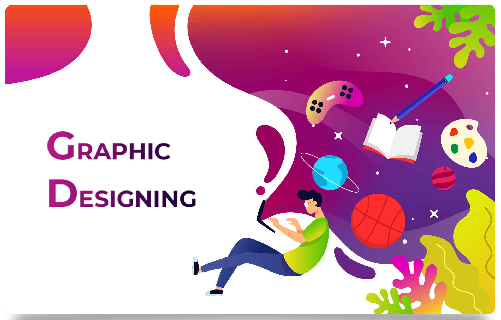

graphic designing

what is graphic designing?
Graphic design is the profession and academic discipline whose activity consists in projecting visual communications intended to transmit specific messages to social groups, with specific objectives.
Principles of graphic designing
1- Balance
This refers to the distribution of the graphic design elements, such as shapes, text boxes and images, of a design evenly throughout a certain layout.Three types of Balance are as follows:
1- symmetrical
2- asymmetrical
3- radical
2- Alignment
This fundamental aspect of a design which creates a visual connection between elements such as images, shapes or blocks of texts. Alignment helps develop a sharp and ordered appearance by eliminating any distortion within the layout. It represents the scale of each element by comparing their proportion and focusing on the elements that can have a strong impact on users.
3- Hierarchy
This method combines two aspects, dominance and priority, giving extra weight to certain elements of a design over others. It helps brands convey their message to the audience by focusing on a particular element of the design.
4- Contrast
Contrast is an important principle in any form of visual art as it guides the customer’s attention to the key elements of a design. It is essential for maintaining the distinction between similar elements in a design, thereby enhancing a layout’s overall legibility.
5- Rhythm
Rhythm brings together different elements to create a more organised and consistent look. Repetition of certain elements such as logos or colour can help make a brand easily recognisable and strengthen the overall look.
6- Proximity
Proximity helps in decluttering the overall design by creating a relationship between related elements. It forms a visual connection among important design factors such as colour, font, type or size, ensuring the layout is balanced to form a perfect design. It enables the audience to have a pleasant overview of what they are looking at, thereby offering a good user experience.
7- Colour and space
Choosing the right colour can help define the tone of the design. Designers can choose from a wide range of colour combinations for the background and text of the layout. Space refers to the area around or between the various elements of the design. It can either be used to create shapes or highlight the important aspects of a design. Graphic designers use a colour palette to choose colours that can create contrast or even work together to complement other elements.
Advantages
1- The use of logos, pictures and design can help create a professional image of your company in the eyes of your audience.
2- Graphic design helps establish your visual identity, which reflects your company’s mission and values.
3- It can be very effective at attracting attention and encouraging your audience to want to learn more. It also can be employed to produce visual aids that can better help you communicate your ideas.
4- Build Trust, Goodwill & Loyalty
5- Increase Sales & Market Position
Disadvantages
1- It's All About Dealines.
2- The page is not always attractive.
3- Deadlines Interfere with Creativity.
4- The Details will Make or Break You.